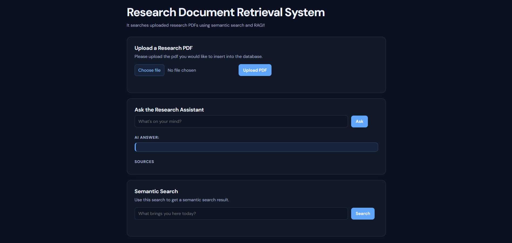
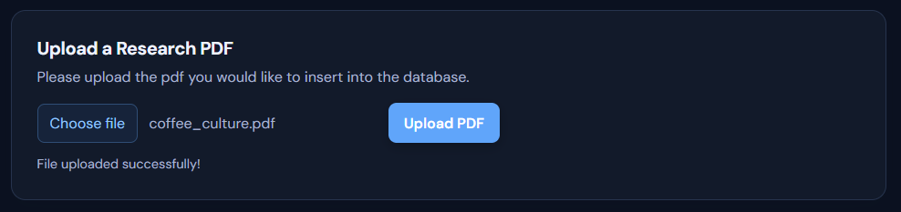
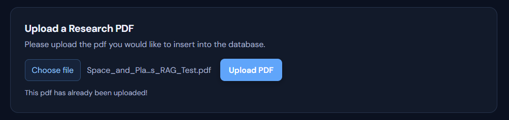
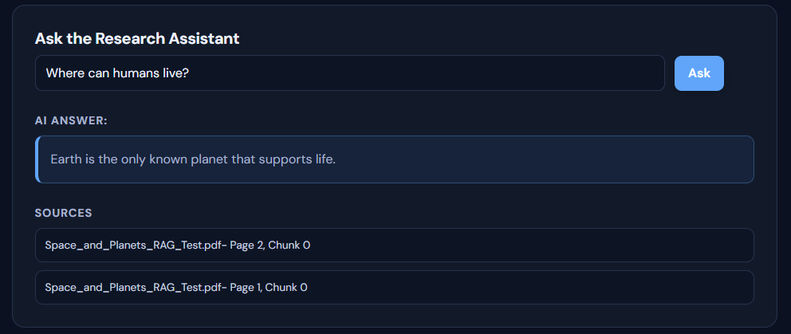
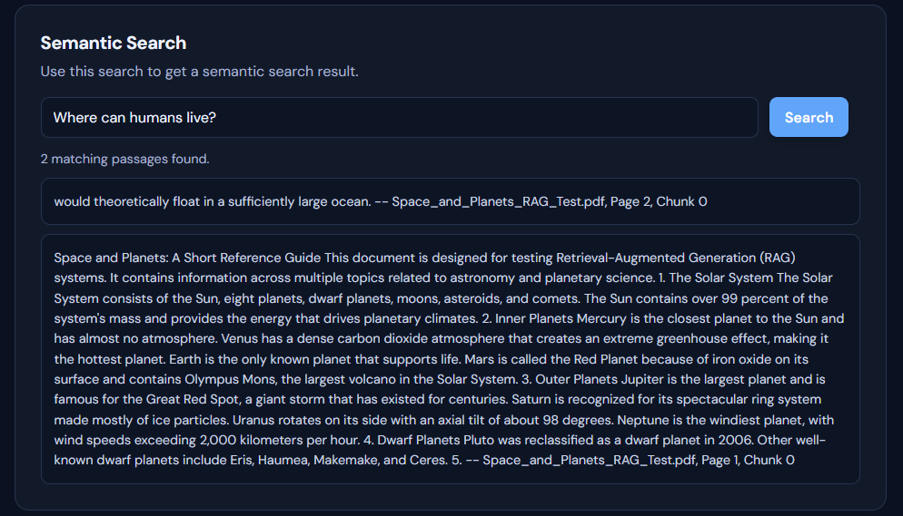

Ingest
Upload a PDF. The service extracts page content, checks for duplicate files, and splits text into chunks.
PROJECT CASE STUDY · 2026
A research-document assistant that searches by meaning, then answers questions from relevant passages with source references.

OVERVIEW
The system accepts research PDFs and prepares their contents for meaning-based retrieval. Users can search for relevant passages or ask a question; responses use retrieved context and show source PDF pages.
The project uses Java, Spring Boot, Spring AI, Gemini embeddings, PostgreSQL with pgvector, and Docker. Redis-based semantic caching is an ongoing part of the build. Its REST APIs handle document ingestion and search.
HOW THE SYSTEM WORKS
Upload a PDF. The service extracts page content, checks for duplicate files, and splits text into chunks.
Gemini embeddings represent passages as vectors stored in PostgreSQL with pgvector.
A semantic query retrieves relevant passages by meaning and similarity, with source metadata.
Spring AI and Gemini generate a response grounded in retrieved context and show source pages.
EVALUATION
The five-question evaluation used the astronomy test PDF linked below. All five RAG answers were correct. With 500-token chunks, four of five correct passages ranked first; all five appeared in the returned results. This is an initial test set from one document.
PROJECT DOCUMENTATION
App screenshots connect the workflow to the evaluation document: uploads, duplicate handling, grounded answers, and semantic results.




TECHNOLOGY